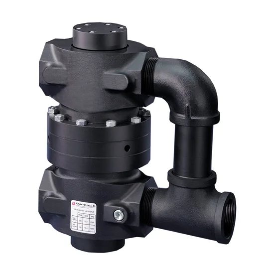
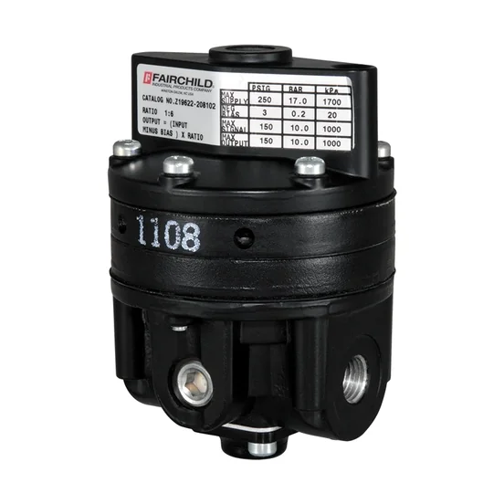
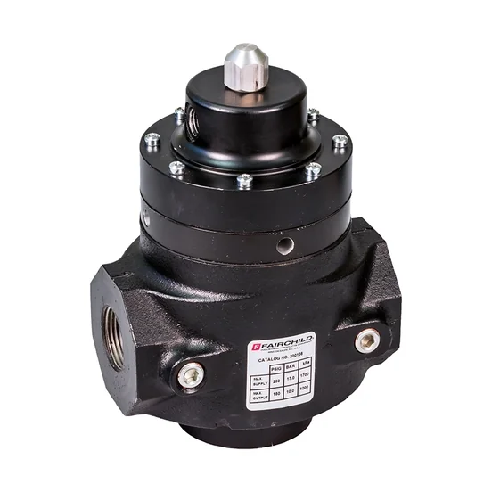
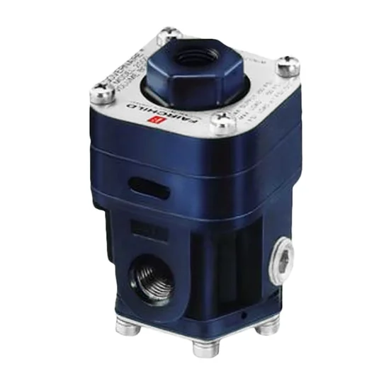
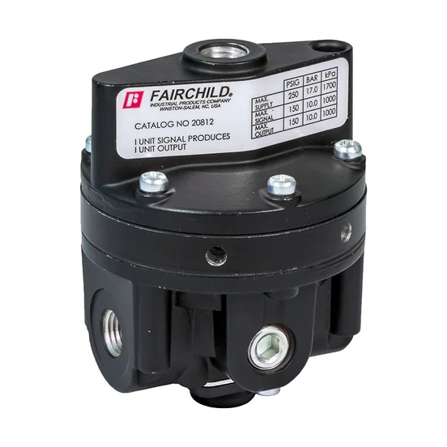
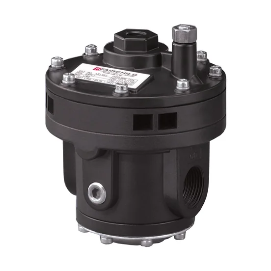
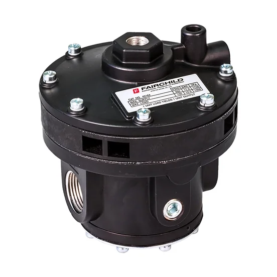
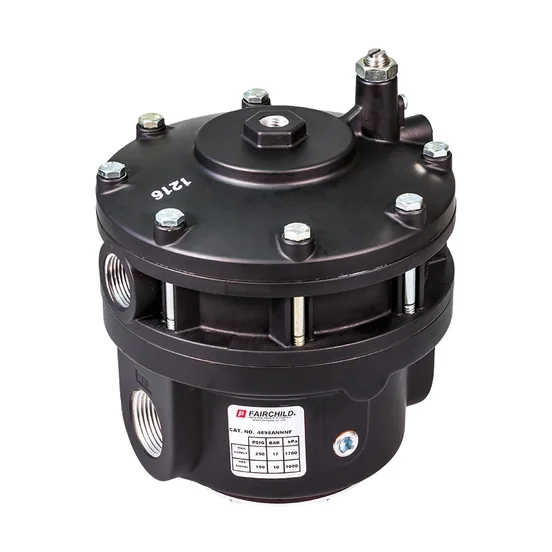
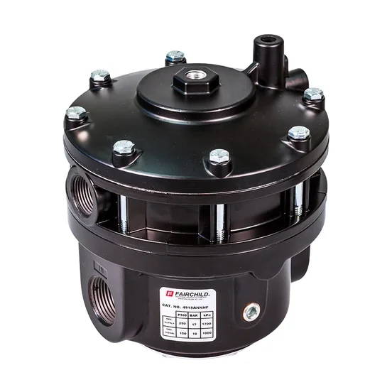

FAIRCHILD - Volume Boosters
Based on the Model 200 valve body, the Model 200XLR Volume Booster couples two identical units to obtain ultra high flow capacity in both forward and exhaust modes. As a pilot operated regulator design, the M200 is designed for high supply pressures and features ultra high flow c

Ảnh sản phẩm chính thứcFAIRCHILD - Volume Boosters model

M20
Rotork Fairchild Model 20 Pneumatic precision volume booster
Xem model →

M200XLR
Rotork Fairchild - Boosters - Model 200XLR Pneumatic Volume Booster
Xem model →
M20BP
Rotork Fairchild - Regulators - Model 20BP Back Pressure Pneumatic Booster
Xem model →
M4500A
Rotork Fairchild Model 4500A Forward/Exhaust High Flow No Bleed Pneumatic Volume Booster
Xem model →
M4500ABP
Rotork Fairchild - Boosters - Model 4500ABP Back Pressure Pneumatic Booster
Xem model →
M4800A
Rotork Fairchild Model 4800A Forward/Exhaust High Flow No Bleed Pneumatic Volume Booster with Bypass Valve
Xem model →
M4900A
Rotork Fairchild Model 4900A Forward/Exhaust High Flow No Bleed Pneumatic Volume Booster
Xem model →Thư viện tài liệu range
Datasheet, manual, brochure và certificate lấy từ nguồn chính thức Rotork.